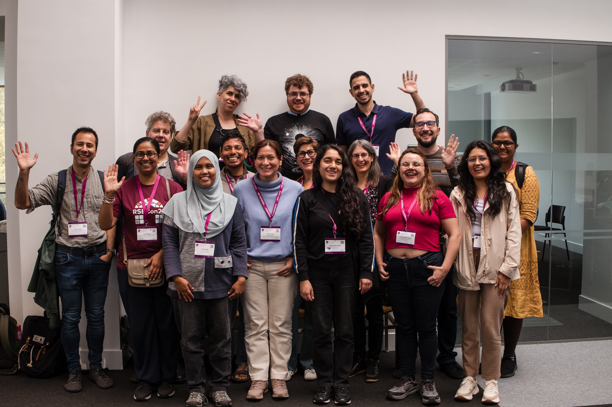
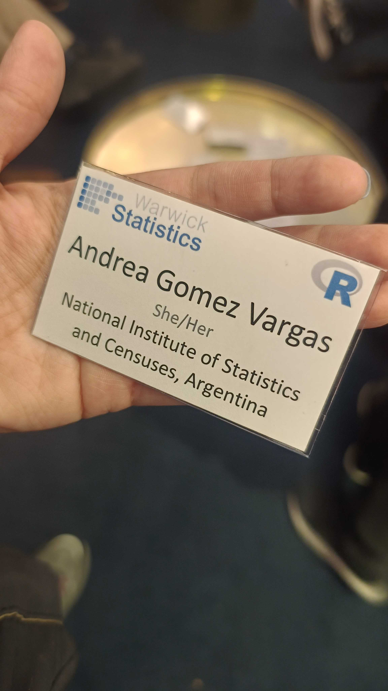
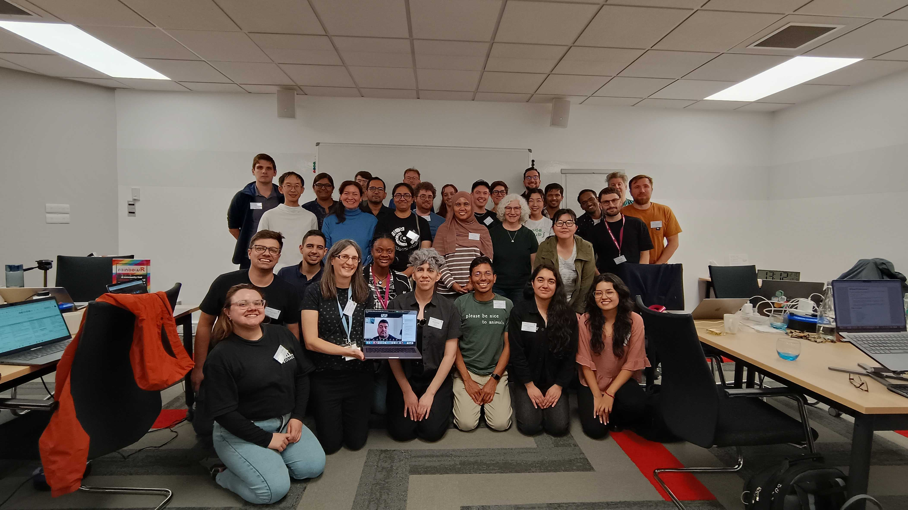

R Developer Day @RSECon25
El R Dev Day es un evento colaborativo tipo hackathon dedicado a contribuir al desarrollo de R y su ecosistema. Reúne a personas con distintos niveles de experiencia desde quienes dan sus primeros pasos en contribuciones hasta desarrolladores con trayectoria para trabajar juntas en mejoras de código, documentación, traducciones y herramientas que fortalecen el software y su comunidad.
Este año, el R Dev Day se celebró como actividad satélite de la conferencia RSECon25, en la Universidad de Warwick (Reino Unido). El encuentro ofreció becas completas y parciales para participantes de distintas regiones del mundo, promoviendo la participación internacional y el intercambio entre comunidades, especialmente del Sur Global. Gracias a una de esas becas, tuve la oportunidad de participar presencialmente, representando a la comunidad de R en Buenos Aires y a América Latina.

El encuentro tuvo lugar el 12 de septiembre, fue una jornada completa dedicada a contribuir al desarrollo de R junto a personas de distintos lugares del mundo —desde la India hasta Argentina, pasando por México, Colombia y Chile—. Ese intercambio de ideas, conocimientos y experiencias fue tan diverso como enriquecedor.
Contribuir, aprender y conectar

Durante la jornada trabajé en dos tareas diferentes. La primera fue en el tablero de monitoreo de traducciones de R (translations-dashboard)), donde, en equipo, colaboramos reorganizando el plan de armado: definimos la estructura de carpetas, scripts y datos, propusimos migrarlo a un Quarto dashboard y establecimos pautas para que toda la herramienta sea reproducible y más fácil de mantener. Esta tarea implicó ordenar el proyecto de manera clara, asegurando que otros contribuyentes puedan continuar el trabajo sin dificultades.
La segunda tarea se centró en una contribución técnica al ecosistema de paquetes de R en CRAN, que buscaba enviar pull requests para paquetes con la nota “Lost braces” en archivos Rd, ayudando a mantener la calidad y coherencia de la documentación de los paquetes. Ambas actividades fueron una gran oportunidad para aprender trabajando en equipo y aportar a un proyecto que beneficia directamente a toda la comunidad de R.
R en Buenos Aires
Tuve la oportunidad de presentar R en Buenos Aires, compartir lo que hacemos en nuestra comunidad y sumar a muchas personas a una foto colectiva con el hex fileteado gigante, un diseño muy tradicional de nuestra ciudad.
También contamos la historia del capítulo local, que se reactivó hace un año, y relatamos las actividades que venimos impulsando desde entonces para fortalecer el aprendizaje colaborativo. Fue muy valioso poder intercambiar experiencias y proponer iniciativas conjuntas con otras comunidades de R en el mundo, ampliando los lazos y las posibilidades de seguir construyendo en red.
Entre códigos y abrazos
Valoro mucho todo lo que esta experiencia me brindó, no solo por haberme permitido conocer el Reino Unido y su cultura, sino también por sentir de cerca la fuerza de una comunidad global que crece, se apoya y se inspira mutuamente. Quiero agradecer especialmente a Heather Turner, por todo su trabajo en la organización y la gestión de las becas; hay un esfuerzo enorme detrás para que mi estadía, y la de todos los asistentes, fuera la mejor posible. Compartir las cenas, las charlas y la jornada fue un tiempo valioso, y me siento muy agradecida de haberlo hecho con distintos conocides de la comunidad de R, algunos de ellos ya amigos míos.

Me da mucha alegría ver cómo mis aportes llegan a la comunidad, pero aún más me emociona mirar a la Andrea de años atrás: aquella que llegaba a los eventos con su PC, sin entender casi nada de R, y hoy lidera un capítulo, comparte conocimientos y envía PRs a paquetes. Es un logro invaluable, que sin el apoyo de la comunidad no habría sido posible, y que me inspira a seguir aprendiendo, contribuyendo y acompañando a otres en su camino.
Cerrar esta jornada me motiva a seguir contribuyendo a la comunidad y aportando a R, aunque sea de manera virtual en los R Contributor Office Hour, hasta la próxima vez que podamos encontrarnos en persona y compartir códigos… y abrazos.